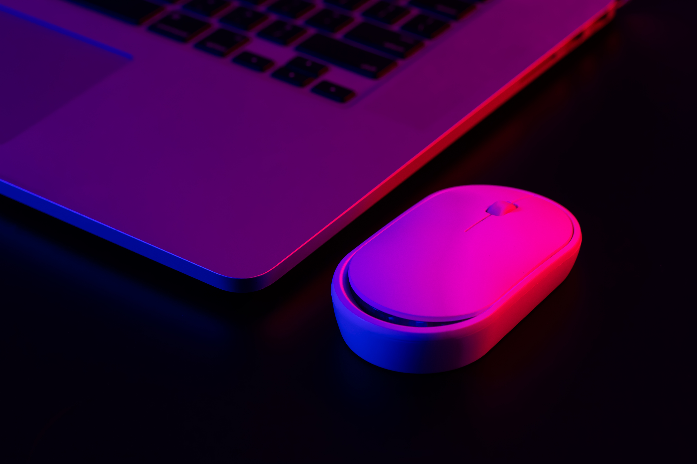

Aqui você encontra teclados, mouses, monitores e outros eletrônicos que foram avaliados, consertados e testados pela EcoTech. Produtos prontos para uso, com qualidade garantida e menor impacto ambiental.
Todos os itens disponíveis foram doados por clientes e passaram por recondicionamento. A iniciativa combate o descarte irregular, amplia o ciclo de vida dos eletrônicos e promove o consumo consciente.
Cada produto é testado tecnicamente antes de ser disponibilizado. Você pode filtrar por categoria, visualizar detalhes e escolher de forma segura, sabendo que está apoiando o meio ambiente.
